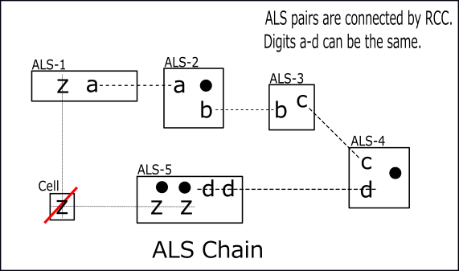
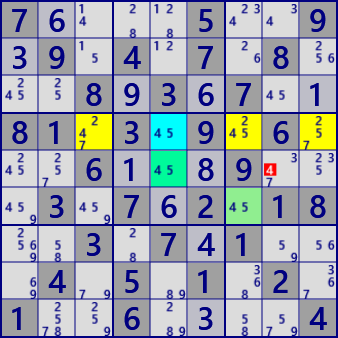
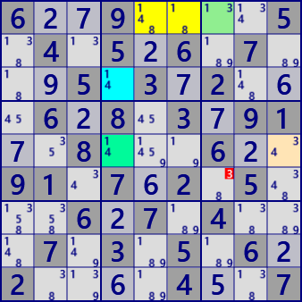

ALS Chain
ALS Chain is an analysis algorithm that connects ALS into a loop in RCC.
As shown in the diagram of ALS Chain, ALS forms a chain of links through the RCC link,
and Locked occurs when this sequence has the following properties.
- First and last ALS has a digit z different from RCC.
- Outside of ALS, there are cells covering all z in the first and last ALS.

Sample of ALS Chain.

ALS Chain
Stem : r5c8 #4 ->
ALS 1: r6c7 #45 -> #5
ALS 2: r4c379 #2457 -> #4
ALS 3: r4c5 #45 -> #5
ALS 4: r5c5 #45 -> #5
Excluded cells#no : r5c8 #4
 ALS Chain
Stem : r6c7 #3 ->
ALS 1: r1c7 #13 -> #1
ALS 2: r1c56 #148 -> #4
ALS 3: r3c4 #14 -> #1
ALS 4: r5c4 #14 -> #4
ALS 5: r5c9 #34 -> #4
Excluded cells#no : r6c7 #3
Paste the next 81 digits onto the GNPX/grid and solve with /Solve/MultiSolve/
7....5..9.9.4.7.8...8.3.7..81.3.9.6...6...9...3.7.2.18..3.7.1...4.5.1.2.1..6....4
6..9....5.4.5.6.7...5.3.2...6.8.3.91..8...6..91.7.2.5...6.7.4...7.3.5.6.2....4..7